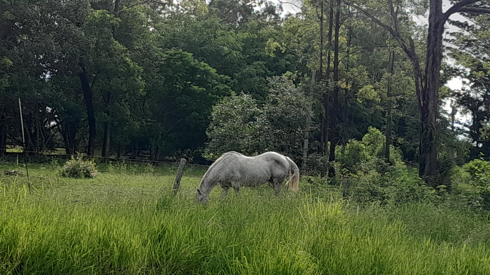
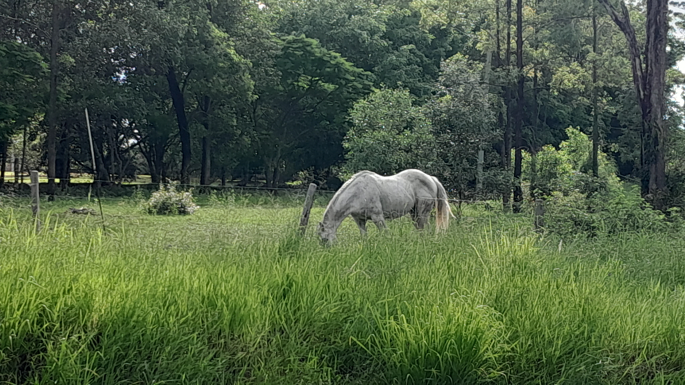
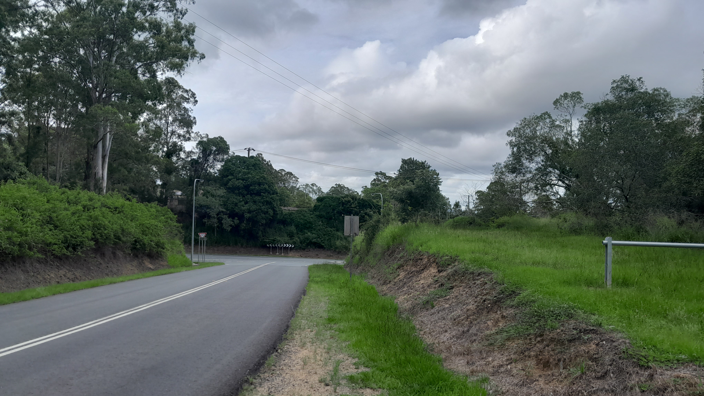
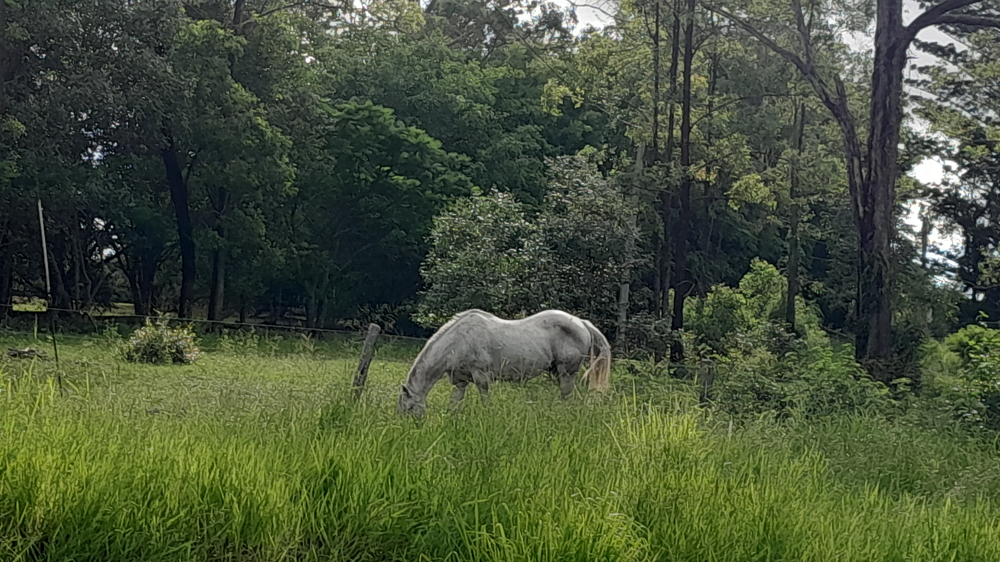
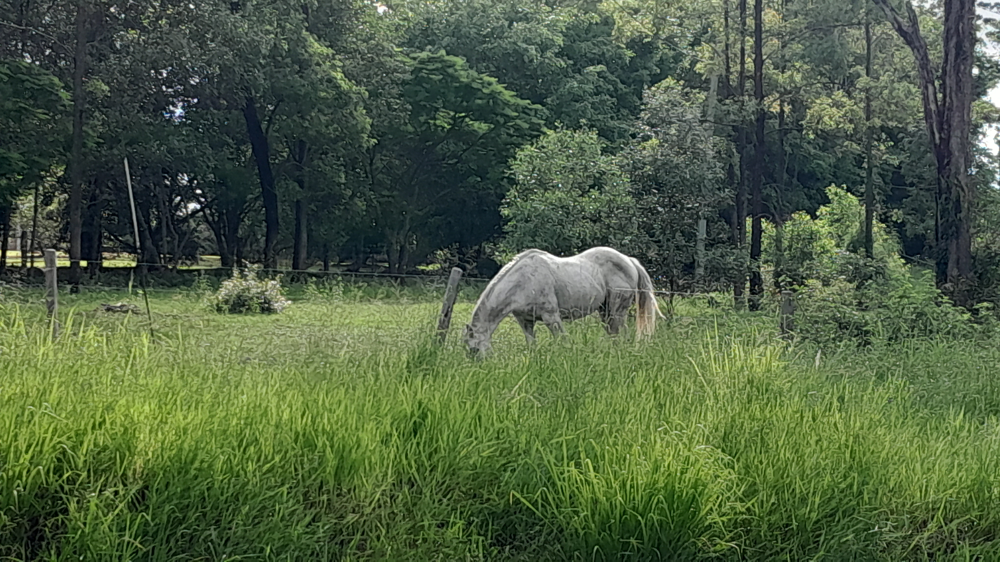
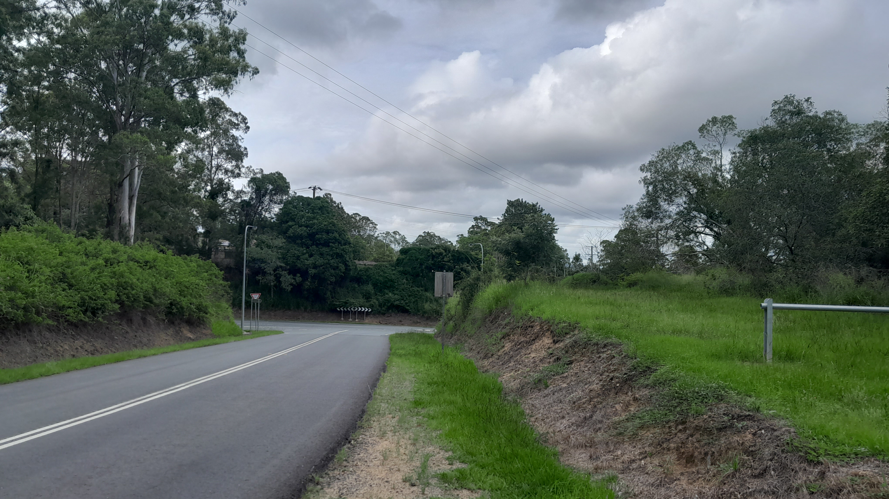
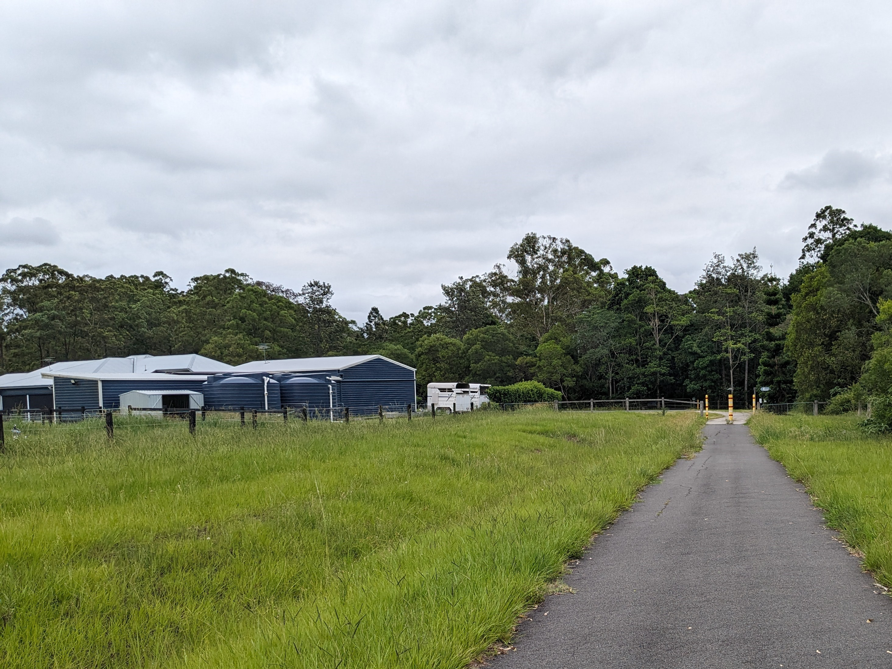
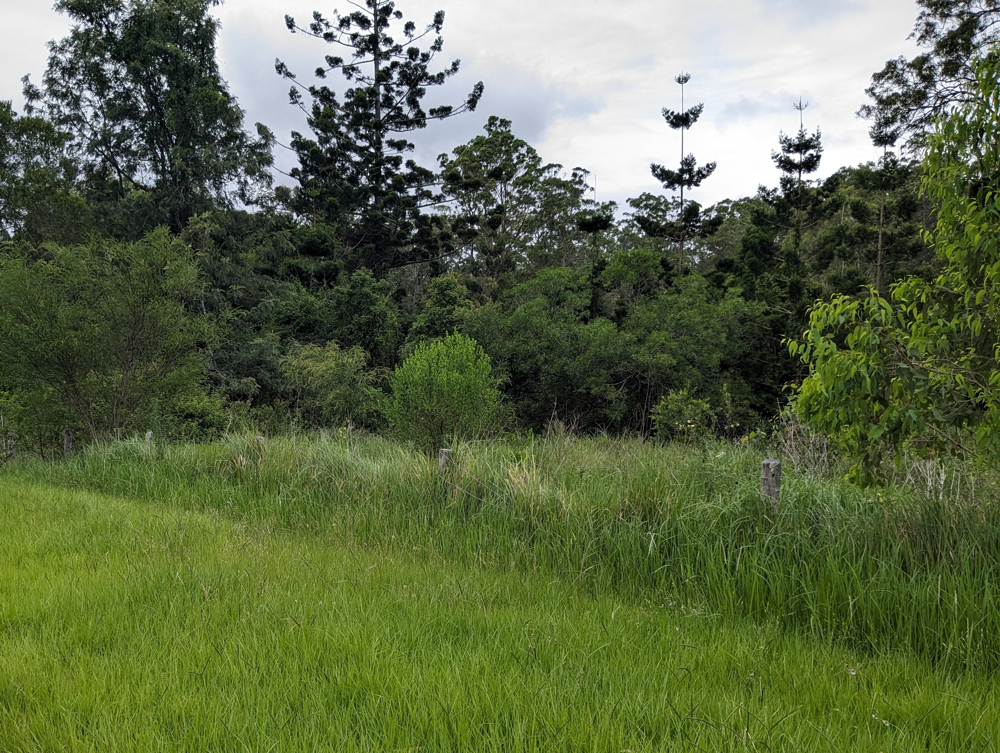
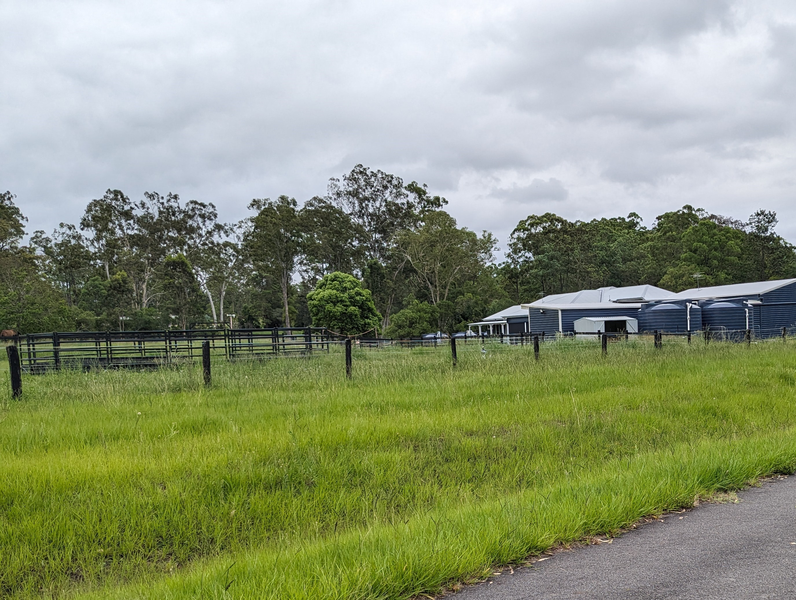

I'm Zac Tom. Hi!
Zac Tom • Brisbane • 2024
I'm Zac, a student from Brisbane, Australia who likes cubing, speedrunning games, playing tennis, eating food, and more.
This is my blog.
It's been a while... (Cubing, working and school)
18/03/2024 9:40PM AEST
So, it's been a while since I made my last update to this website, and a lot has happened in that time. To start, on the 10th of March I went
to a cubing competition, called Cubing in Corinda 2024. This was a really good competition for me, and I competed in 3x3, 3x3 one-handed and
4x4. Here is a picture of my results from that competition.

So, I did pretty well. As you can see, I made the final round for all the events I competed in. I got PR's in all my events. I was most proud
of my 4x4 and one-handed results, as I did extremely well for both, getting a great average in both, and almost getting an overall PB in one-hand.
As well as this, I've also been working hard at my job. It's very busy and sometimes stressful, but it's been a good experience and I'm finally
making a decent amount of money for myself, which is good. I'm hoping that I can save up some money by the end of the year so that I can afford
my first car before school gets too stressful.
Speaking of school, isn't that fun? Well, not really. A lot of subjects are very stressful, especially Specialist Maths, which is just very
difficult maths (what fun!). I like maths, but it is difficult. English Literature is hard, other subjects are hard, but that's okay. I
really expected this for entering year 10.
Finally, I've been taking lots of pictures of my grandparents cats recently, and let's just say they're extremely photogenic.


Aren't they cute?
--§--
Brisbane Summer 2024 Day 2
4/02/2024 • 3:39PM AEST
Today was the second day of Brisbane Summer 2024! Today I competed in 3x3 round 2, 2x2 round 2, and 3x3 One Handed round 2. I arrived around
30 minutes before I had to compete in 3x3 round 2, and I warmed up until my round. Then, I had to compete. This round went pretty good, and
I got a PR 13.16 average with a PR 11.01 single. This ended up being enough to make 3x3 semi finals, but barely. My friend Felix also made
3x3 semis, placing 1 spot behind me.
Right after that was 2x2. I wasn't really expecting to do better than my previous average, and I ended up not. But it still wasn't bad, with a
4.59 average and a 3.81 single. That wasn't close to being enough for finals though.
Following 2x2 was 3x3 One Handed, which I had gotten a massive PR in the round before, so I didn't really expect much. Then, in order, I
got a 34, 32, 31, 30, and then finished off with a 45, giving a PR average of 32.90 and PR single of 30.30. This was honestly insane, but
still not close to being in finals.
Since I made 3x3 semis, that was the final event I would have in the day. I was almost the worst person to qualify, but I still did well. I
started with a 13.49, pretty average, followed by a big PR of 10.24. The next 3 solves were 11.27, 13.34, and a 20 which will not be talked
about. This ended up as a 12.7 PR average, which was worse than what Felix got by 7 milliseconds. Almost insane.
Overall, Brisbane Summer 2024 was a very good competition, and I had a lot of fun with Felix and my other friend Aaron. I got a lot of PR's,
talked to a lot of people, and just got some great times.
Here is a picture of my results from this competition, as well as some shots of the venue.


--§--
Brisbane Summer 2024 Cubing! (and life update)
h
3/02/2024 • 10:07PM AEST
It's been a while since I posted on here, and that's because a lot has been happening! To start, school began on the 22nd, and since I'm in
year 10, there's been a lot of homework to do. But really, it hasn't been too bad, and I've managed to get all the work done (for now). Next,
I've been working at the job at the Thai restaurant, which has been a really great experience, and I'm also getting paid now. I've done 2
shifts so far, and made some money.
Today was the first day of my first cubing competition of 2024, Brisbane Summer 2024! In this competition I'm competing in 3x3, 2x2, 4x4, 5x5,
and 3x3 One Handed. In 3x3, I did pretty well, getting a 13.9 average, but it could have been much better if I didn't choke the first solve.
Next, 3x3 One Handed, and I did so well in this event. Starting off with a 45 second solve, I then proceeded to get a 33, 34, 34, and 32 to
get a 34 average, which was just insane and put me well within making the second round.
After that was 2x2, where my goal was a sub 5 average. The average started off with an insane scramble, with an entire white layer already
solved. That first solve was a 2.98, pretty insane for me and a competition PR. Next, I got a 5+2=7, then a 3 and 2 4s to get a 4.3 average
that absolutely destroyed what I was aiming for.
Then, 4x4 and 5x5. I'm putting these together because they were both pretty mediocre. I didn't make cutoff for 5x5, and my 4x4 average was
pretty terrible. But I did get a PR 4x4 single of 46 seconds.
also my friend felix had a plushie of a meme cat

--§--
Working! (and paying taxes)
20/01/2024 • 10:09PM AEST
Yesterday, I did a job trial at a local Thai restaurant. The staff were very friendly, and the trial lasted 3 hours. The trial was just
for doing general work for 3 hours; cleaning tables, making coconut rice, putting meals in containers and bags, and bringing out food to
customers at the tables. This was a really good experience, and since it was at peak time (Friday night) there was always something to do.
Today, in the morning I went to the post office to finish my TFN (Tax File Number) application. After a small complication, I finished
it, and the person working at the post office said 'Congratulations, you're now a taxpayer'. That wasn't really a positive message.
Then, later in the day, I got a message back from the Thai restaurant saying that I passed the trial! I was really happy about this,
and as of writing I'm waiting for them to message me about employment. This will hopefully be my first job, and it's really good life
experience (and maybe money).
Hooray, I'm a taxpayer.
--§--
Images from recent rides
11/01/2024
I have been going on some long, 15km rides along the Samford rail trail for the past few days, here are some images from that.
 







Yeah, not much to see along this track.
--§--
20k Rail Trail
6/01/2024 • 7:10pm AEST
Today, me and my mum went on a 20k ride through a bike path to another suburb, 10 kilometres there, and 10 kilometres back.
So yeah, it does feel a bit ridiculous after my last post saying it was my first bike ride in many months, but it doesn't take much
practice to be able to go on long bike rides.
The bike path we went along was called the Samford Valley Rail Trail, the trail being completed in 2015. We had a short-ish bike ride to
the Ferny Hills side of the track, and then cycled all the way along the trail, around 9km, to the Samford side.
This was very tiring. The way to Samford was easier than the way back, although that may have been because we were very tired from
the initial ride there.
At the edge of Samford, there were these three huge hills that we had to get over. I tried to go as fast as I could down the downhill
side, so I could go faster up the uphill side. This, while worrying to my mum, was very fun and effective at getting over the hill.
For the most part, the journey was made up of slight inclines and declines, with the declines obviously being more enjoyable than
the inclines. The inclines were good exercise, though. And there were some good views.




--§--
First Bike Ride! (in a while)
5/01/2024 • 4:10 PM AEST
I'm writing just minutes after I returned from my first bike ride in around 6 months. Me and my mum went from our house to a nearby
train station, and from there went along a main road until we reached a bike path. This path connected the suburb we live in to another
suburb around 11km away.
After around 5 minutes of riding, just past the train station, it really started to rain hard. We kept on riding anyways, because we
would get extremely drenched either way. The path was mostly flat, with some not-so-steep uphills and downhills. Going down on the
downhills was surprisingly fun and not scary, despite the fact that I haven't ridden in a long time.
All in all, this bike ride was a really good experience, and a good way to get out of the house during these mostly boring holidays
10/10, would do again.
Just after we got back, I went into the bathroom to wash my hands, and immediately saw a massive huntsman spider. We took it outside
on the varanda, and it kind of just sat there in the cup not moving. Apart from that, not much else has happened today.

--§--
It's the New Year!
2/01/2024 • 3:29 PM AEST
I'm writing this for the third time because I forgot to save it.
It's 2024! This year is a leap year, meaning that there will be a February 29th. Yay? This year, having 366 days as it does reminds me of
an interesting Microsoft Excel bug where the program believes that the 29th of February 1900 was a real day. This is false, as 1900 was
not a leap year. This is because a year divisible by 100 is only a leap year if it is also divisible by 400, defined by the Gregorian
Calendar that we all use. Thanks to Microsoft's dedication to backwards compatibility, they can't change this glitch, because they
would risk breaking some extremely important spreadsheet somewhere in the world.
2 weeks ago, a game I have a lot of playtime in, Geometry Dash released its 2.2 update after 7 years of being on the 2.1 update. This
update was, to say the least, enormous. This update added new gamemodes, levels, maps, gauntlets, icons, colours, and even a new
level type called 'platformer'. The base game added a new level, 'Dash', and a new platformer level collection 'The Tower'. Below is an
image from 'Dash'.

Yeah, it definitely looks interesting. I started by playing a difficult, Celeste-inspired platformer level called 'Coaster Mountain' by
a creator named Serponge. This level looked and played really incredibly well, and while it was difficult, it only took me around an hour
to beat it. Then, I played the base game levels and then the new gauntlet levels. They were really impressive, and I'm sure more
content is going to be added soon into Geometry Dash.
Yesterday, me and my dad set up and fixed the bikes that we had. I had a sudden inspiration to ride bikes all of a sudden (because it's
the school holidays and I don't have much to do), so I took the bikes out of the garage and me and my dad put the wheels back on and fixed
some of the broken gears.

Yeah, it was raining all day, and has been for the last week, and probably will for the next week. That's just Australian summer for you.
--§--
Almost 2024
31/12/2023 • 12:06 PM AEST
This is the first day of my blog. I made this as a sort of New Years resolution, because I was seeing projects online where people had
documented their lives over long periods of time in several ways, and I wanted to have a way of remembering my life after a long period
of time. There were a few projects online that I saw, some notable ones being Cary Huang's photo every day for 8 years, where he took
one photo of himself with a card with a short note about that day every day for 8 years, or a YouTube channel I stumbled across yesterday
where a man made a short, 20 second vlog every day for around 7 years, which is still continuous. So, this is why I decided to start my
blog. Today is quite a cool day for summer, around 26 degrees currently at 11am. The weather is forecast for storms, however the blue
skies doesn't make it seem like that's going to happen anytime soon. As I write this, I'm calling with my partner who's about to go
to Melbourne. She says it's going to be so cold, but since it's summer, it's probably only going to be about as cold as it is here in
winter, if not a bit colder.
I'm typing on my new Keychron V1 keyboard that I got for Christmas, which I like a lot.

I've put KTT Grapefruit switches in it, and replaced most of the keys with a rainbow POM Jelly keycap set I have. I think it looks pretty
good. The spacebar has a small amount of ticking, but its pretty unnoticeable. This keyboard is a small upgrade from the Vissles V84 I had
before. I would recommend this to anyone starting to get into custom mechanical keyboards.
--§--